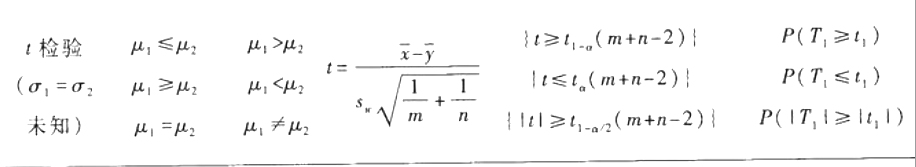

假设检验的基本思想与概念
基本思想
（1）通过样本对一个假设作出“对”或“不对”的具体判断，检验的结果若是否定该命题，则称拒绝这个假设，否则就称为接受该假设．
（2）若假设可用一个参数的集合表示，该假设检验问题称为参数假设检验问题，否则称为非参数假设检验问题．
基本步骤
（1）建立假设；
（2）选择检验统计量，给出拒绝域形式；
注意：一个拒绝域W唯一确定一个检验法则，一个检验法则也唯一确定一个拒绝域．
（3）选择显著性水平
第一类错误：命题本为真，却由于随机性落入了拒绝域，而否定了命题．（弃真）
第二类错误：命题本为假，由于随机性落入了接受域，而接受了命题．（取伪）
犯第一类错误概率：α＝pθ{（X∈W）}，θ∈Θ0，也记为p{X∈W|H0}；
犯第二类错误概率：β＝pθ{（X∈W(＿)）}，θ∈Θ1，也记为p{X∈W(＿)|H1}．
注意：α，β的控制是相反的，即减小α，会加大β．
①势函数：设检验问题H0：θ∈Θ0 vs H1：θ∈Θ1的拒绝域为W，则样本观测值X落在拒绝域W内的概率称为该检验的势函数，记为g（θ）＝pθ（X∈W），θ∈Θ＝Θ0∪Θ1
②显著性检验：对检验问题H0：θ∈Θ0 vs H1：θ∈Θ1，如果一个检验满足对任意的θ∈Θ0，都有g（θ）≤α，则称该检验是显著性水平为α的显著性检验，简称水平为α的检验．
（4）给出拒绝域依据题意分析，确定统计量来给出拒绝域．
（5）做出判断有了明确的拒绝域W后，根据样本观测值我们可以作出判断，决定假设是否成立．
正态总体参数假设检验
1)单个正态总体均值的检验
设x1，…，xn是来自N（μ，σ2）的样本，单个正态总体均值的假设检验列表如下：
2)假设检验与置信区间的关系
检验的接受域与置信区间是一一对应的．
3)两个正态总体均值差的检验
设x1，…，xm是来自正态总体N（μ1，σ12）的样本，y1，…，yn是来自另一个正态总体N（μ2，σ22）的样本，两个样本相互独立，两个正态总体均值的假设检验如下表：

注：
t1是服从自由度为n＋m－1的t分布的随机变量，t2是服从自由度为l的t分布的随机变量．
正态总体方差的检验
（1）单个正态总体方差的χ2检验；
（2）两个正态总体方差比的F检验．
两正态总体方差的假设检验如下表：
指数分布参数的假设检验
（1）提出假设：H0：θ≤θ0 vs H1：θ＞θ0拒绝域：W1＝{χ2≥χ1－α2（2n）}，p值：p1＝P（χ2≥χ02）．
（2）提出假设：H0：θ≥θ0 vs H1：θ＜θ0和H0：θ＝θ0 vs H1：θ≠θ0
检验统计量不变，拒绝域以及检验的p值分别为
WⅡ＝{χ2≤χα2（2n）}，pⅡ＝P（χ2≤χ02）
WⅢ＝{χ2≤χα/2（2n）或χ2≥χ1－α/22（2n）}
pⅢ＝2min{P（χ2≥χ02），P（χ2≤χ02）}
比率p的检验
比率p可看作某事件发生的概率，即可看作二点分布b（1，p）中的参数，作n次独立试验，以x记该事件发生的次数，则x～b（n，p）．
（1）假设H0：p≤p0 vs H1：p＞p0的p值为：
（2）假设H0：p≥p0 vs H1：p＜p0以及H0：p＝p0 vs H1：p≠p0的p值分别为
似然比检验
（1）定义：设x1，…，xn为来自密度函数为p（x；θ）θ∈Θ的样本，考虑如下检验问题
H0：θ∈Θ vs H1：θ∈Θ1＝Θ－Θ0
令
则称统计量Λ（x1，…，xn）为假设的似然比，有时也称之为广义似然比．Λ（x1，…，xn）也可以写成如下形式
 其中θ(∧)表示在全参数空间Θ上θ的最大似然估计，θ(∧)0表示在子参数空间Θ0上θ的最大似然估计．
其中θ(∧)表示在全参数空间Θ上θ的最大似然估计，θ(∧)0表示在子参数空间Θ0上θ的最大似然估计．
也就是说，Λ（x1，…，xn）的分子表示没有假设时的似然函数最大值，分母表示在原假设成立条件下的似然函数最大值．不难看出，如果Λ（x1，…，xn）的值很大，则说明θ∈Θ0的可能性要比θ∈Θ1的可能性小，于是，有理由认为H0不成立．这样，我们有如下的似然比检验．
（2）当采用似然比统计量Λ（x1，…，xn）作为检验问题的检验统计量，且取其拒绝域为W＝{Λ（x1，…，xn）≥c}，其中临界值c满足pθ（Λ（x1，…，xn）≥c）≤α，∀θ∈Θ0，则称此检验为显著性水平α的似然比检验，简记为LRT．
正态性检验
正态性检验：判断总体分布是否为正态分布的检验方法．W检验和EP检验是广泛使用的方法．
1)正态概率图
正态概率图是一种特殊的坐标图，其横坐标是等间隔的，纵坐标是按标准正态分布函数值给出的．
判别方法如下：
（1）利用样本数据在概率图上描点；
（2）用目测方法看这些点是否在一条直线附近；
（3）若果在一条直线附近的话，可以认为该数据来自的总体为正态分布，若明显不在一条直线附近，则认为该数据来自非正态总体；
（4）如果从正态概率图上确认总体是非正态分布时，可对原始数据进行变换后再在正态概率图上描点，若变换后的点在正态概率图上近似在一条直线附近，则可以认为变换后的数据来自正态分布，这样的变换称为正态性变换．常用的正态性变换有如下三个：对数变换y＝lnx、倒数变换y＝1/x和根号变换
2)W检验
设x1，x2，…，xn是来自正态总体N（μ，σ2）的样本，x（1）≤x（2）≤…x（n）为其次序统计量，W统计量定义为
其中系数a1，…，an在样本容量为n时有特定的值，可查教材附表6，对于假设H0：总体分布为N（μ，σ2），其检验的拒绝域具有形式{W≤Wa}，其中α分位数形，可查教材附表7．
3)EP检验
EP检验即爱泼斯-普利检验．
爱泼斯-普利检验对多种备择假设有较高的效率，其出发点是利用样本的特征函数与正态分布的特征函数的差的模的平方产生的一个加权积分得到的．
设x1，…，xn是来自正态总体N（μ，σ2）N的样本，EP检验统计量定义为
其中 x̅ ，s*^2 x̅ ，s*^2就是前述的样本均值和（除以n的）样本方差看，其拒绝域为{TEP≥T1－α，EP（n）}T1－α，EP（n）是样本容量为n时EP检验统计量（在原假设下的分布）的1－α分位数．